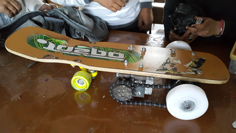
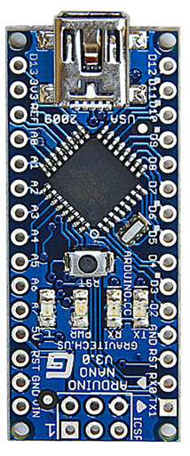
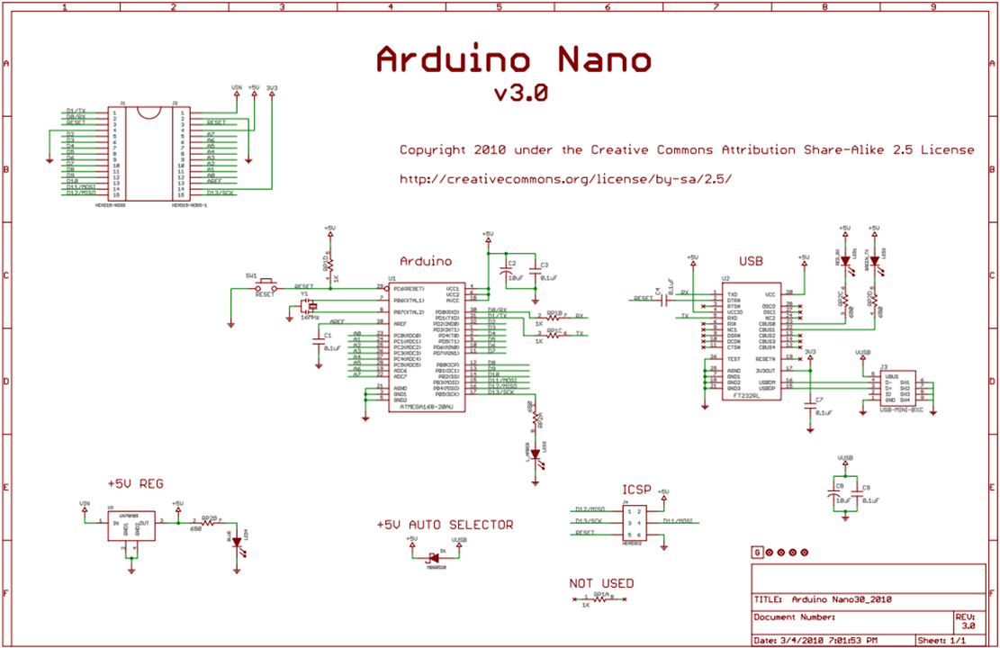
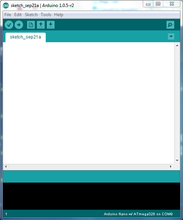
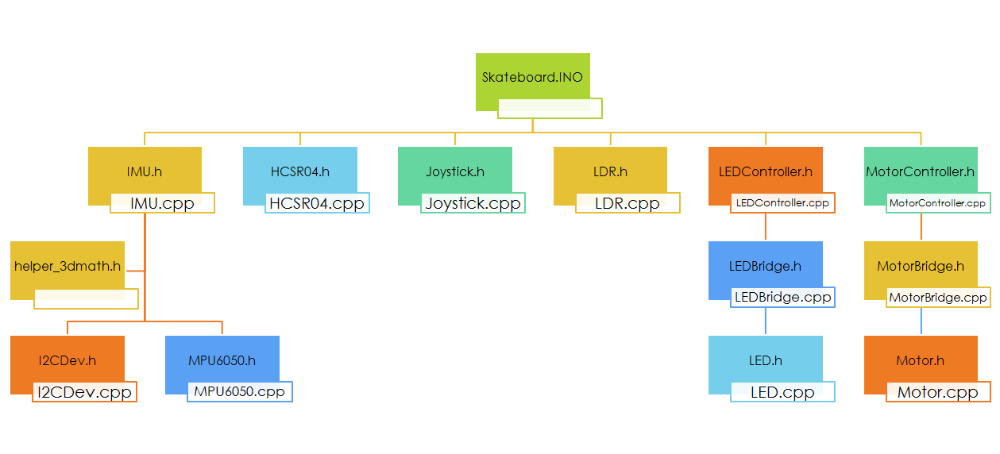
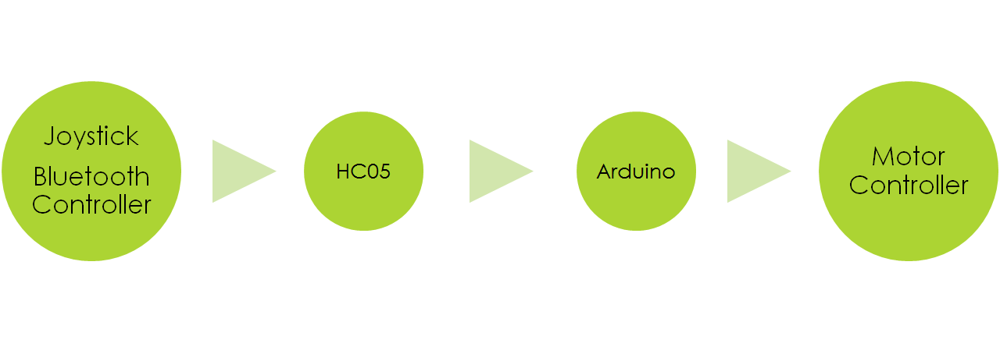
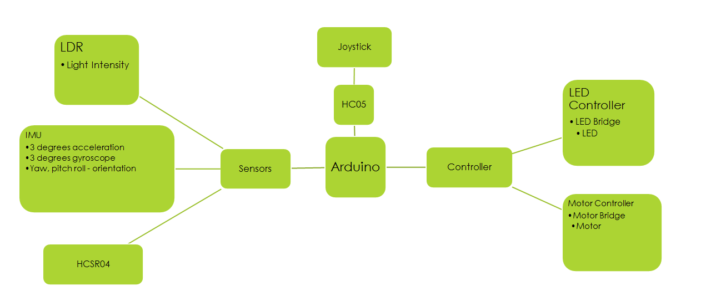

Mobile Controlled Locomotive Design for Personal Transportation in Smart Cities
Jaideep Bhoosreddy
Dept. of Electronics and Communications |
Kuldeep Singh
Dept. of Electronics and Communications |
Janki
Dept. of Electronics and Communications |
Kshitij Bhardwaj
Dept. of Electronics and Communications |
Arushi Gupta
Dept. of Electronics and Instumentation |
Project Mentor:Asst. Prof. Asish Gupta
TIFAC-CORE
Ajay Kumar Garg Engineering College
Introduction
The objective of our final year project is to give proof-of-concept for a cheap and affordable mode of personal transportation which would be controlled by signals from mobile phones using the prevalent Bluetooth technology.
In this presentation we will provide detailed account of the mechanical, electrical and eletronic and computer programming design methodologies along with the design layout, specifications, various technologies used, the advantages, applications and current and possible future features.
We will incorporate study into Microcontroller, Voltage Regulator, DC motor, Inertial Measurement Unit & Ultrasonic Proximity Sensor.
Our Initial Design
For our design we have chosen a skateboard as the basis of our locomotive design.

Progress Report
Materials procurement
Creating C++ Libraries for electronic components.
Created first design with direct motor coupling. It had serious design and construction flaws
Created new design with sprocket chain-pulley configuration.
Reduced the number of motors to 2. Using High Torque Tachibana 24V DC motor. Motor shaft does not support load directly.
Major modifications in programming logic to reflect current state of prototype.
Adding DC Servo motor for direction control. Servo motor turns uni-wheel with load bearing tirods.
Operation
The proposed locomotive will be controlled using the Arduino Nano board which houses the ATMEL AtMEGA microprocessor.
The control signals will be transmitted by an android mobile phone and the communication will be established using the RF Bluetooth protocol.
The HC-05 serial to RF Bluetooth module will be used to convert serial data into RF signal of appropriate baud rate to establish communication with the android mobile application.
The product will be able to detect incoming obstacles in its path with the help of the HCSR-04 ultrasonic proximity sensor.
The product also includes an inertial measurement unit with six degrees of freedom. The MPU-6050 sensor acceleration in three axes and angular rotation in three axes.
The sensor data will be utilized to give the product smarter capabilities and also in feedback control.
Advantages
Cost efficient : Segway's cost minimum Rs. 3 lakhs. With proper fabrication, the locomotive would cost less than Rs. 20,000.
Environment friendly.
Versatile and accessible when compared to wheelchair.
Efficient than other modes of transport.
Runs on battery power, therefore avoiding further chances of price rise of fuel.
Cost of production is reduced using indigenous technologies and streamlined fabrication.
Smart capability to avoid obstacles because of MPU 6050 and HCSR04 proximity sensor.
Speed and torque can both be provided.
Applications
High acceptance in:
Industries, Plants,
Universities,
Airports,
Rec-centers,
Personal Commuting,
Medical Sector,
Golf courses
as an efficient mode of personal transportation.
Safety Measures
Helmets, protective eyewear, appropriate footwear, wrist, knee, and elbow protection must be worn.
Shock absorbers, water-proof, materials will be used. Abstain from operating the electric skateboard in traffic on wet, frozen, oily, or unpaved surfaces.
The wiring, electronics would be placed in secured, isolated containers specially fabricated for safety, wear and tear. They should not be tampered with.
Device must be turned off while charging.
Arduino Nano
Arduino is an open platform hardware. Small, complete, and breadboard-friendly board based on the ATmega328 (Arduino Nano 3.x) or ATmega168 (Arduino Nano 2.x). It has more or less the same functionality of the Arduino Duemilanove, but in a different package. It lacks only a DC power jack, and works with a Mini-B USB cable instead of a standard one. The USB cable is used to power the ardiuno.All the ports of Arduino can be used both as input and output ports. The arduino has LED connected to its 13 pin always.ATME releases the schematic openly so you don’t need to buy an arduino manufactured arduino. |
Atmel ATmega168 or ATmega328 microcontroller
Operating Voltage (logic level): 5 V
Input Voltage (recommended): 7-12 V
Input Voltage (limits): 6-20 V
Digital I/O Pins 14 (of which 6 provide PWM output) Analog Input Pins
8 DC Current per I/O Pin 40 mA Flash Memory 16 KB (ATmega168) or 32 KB (ATmega328) of which 2 KB used by bootloader SRAM 1 KB (ATmega168) or 2 KB (ATmega328) EEPROM 512 bytes (ATmega168) or 1 KB (ATmega328) Clock Speed 16 MHz
Dimensions 0.73" x 1.70"
RESET pin
ATME chip
Ports for plugging input output.
|
|  |

Arduino IDE
- The Arduino Integrated Development Environment presents a simple skeleton environment for interfacing and programming the board.
- It is based on Processing. A Computational Graphics Language and Environment. (Open Source)
- The Arduino uses simple C/C++ style language.
- Arduino supports libraries and Object Oriented Programming as well as concepts like Inheritance, Polymorphism, etc.
- Arduino code is compiled using Arduino library according to the schematic of the particular Arduino board.
|
 |
User
defined libraries | Predefined
libraries |
- IMU
- Joystick
- HCSR04
- LDR
- LEDController
- MotorController
| - Arduino
- Wire
- Serial
- I2CDev
- MPU6050 (3 variants)
- helper_3dmath
|
Library Inheritence Structure

Current Algorithm

Future Algorithm

Motor Specifications
- DC motor
- Voltage- 3v to 24v
- Speed- 10 to 80rpm
- Weight- 50 gm
- Gear Assembly-Spur
- Brush Type-Carbon
- Motor Length-56mm
- Diameter-8mm
- Maximum Load-60kg
Conclusion
For our final year project, we will create a product which will test our skills and knowledge which we gained from our undergraduate education.
Control Systems: P, PI, PID control, control signals.
Digital Signal Processing: Filtering, estimation techniques
Programming: Object Oriented Programming and high level programing constructs.
Microprocessors & Microcontrollers
Electronic Devices, Integrated Circuits & Instrumentation
PCB Manufacturing: Layout Design and PCB Manufacturing
Product Design: Fabrication and Design, Basic ME, SOM, Materials.
Entrepreneurial Development: Project Identification, Development.
Our product will be made using Open Source technologies, both hardware and software.Indigenous inputs and manufacturing would give us a competitive priced product at very low cost price and high profit margin.It will be cheep, reliable, efficient, versatile and useful.The product has many future prospective and scope for improvement.